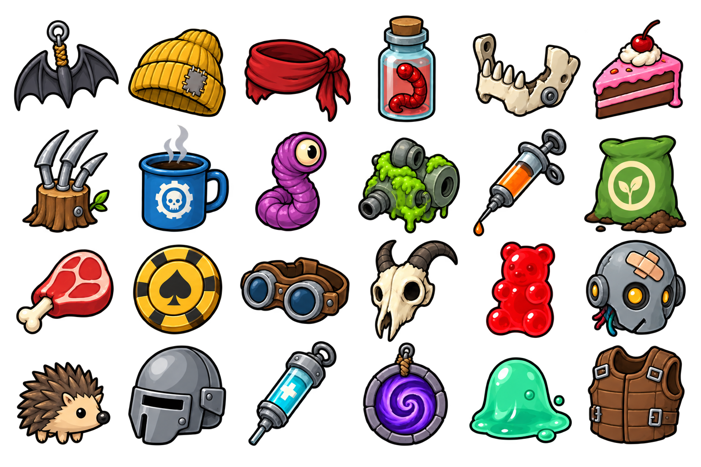
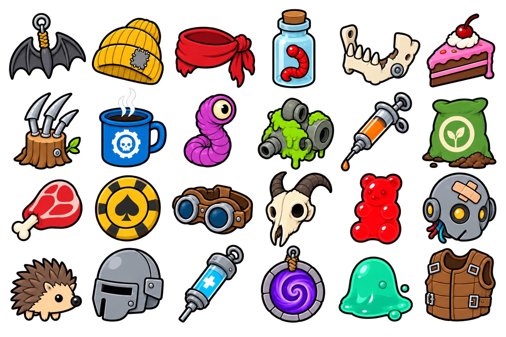
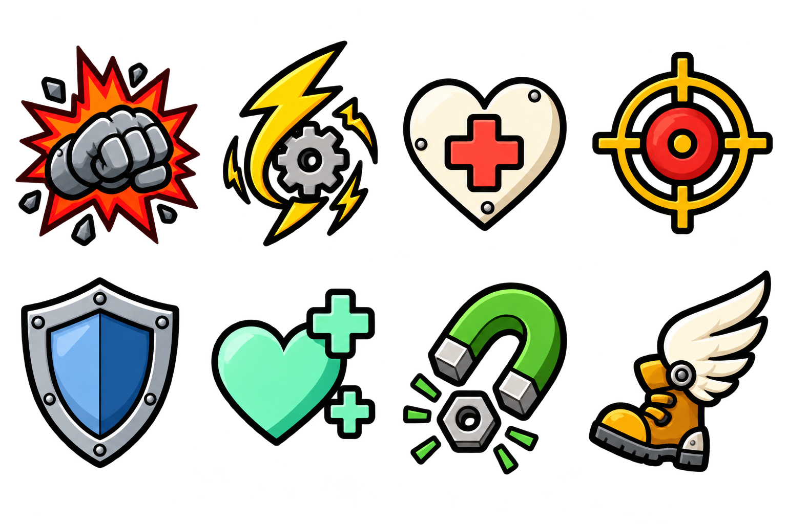
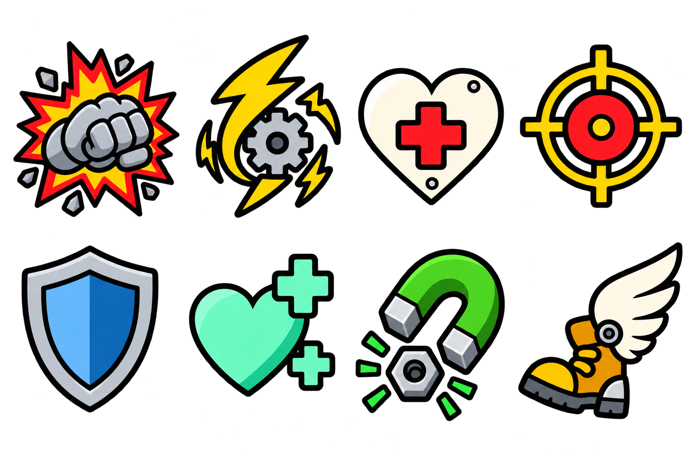

Left: the previous item art. Right: the user-approved replacement, now integrated in the AnimatedMenu build. Both use the same subjects and order. The new pass reduces mottled shading, scratches and small surface details; this is a further cleanup, not the first one. These are full source sheets; in-game icons are sliced from them.



